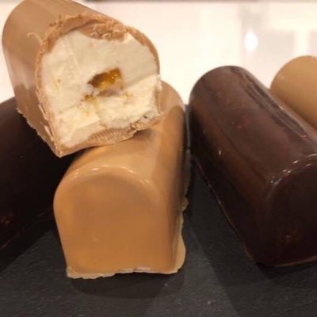
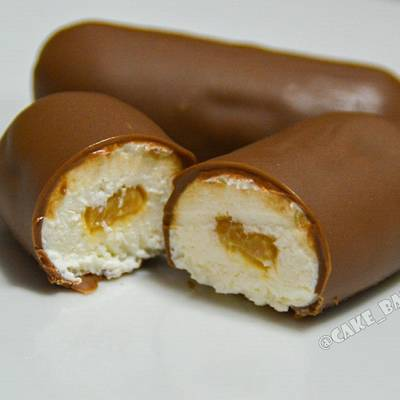
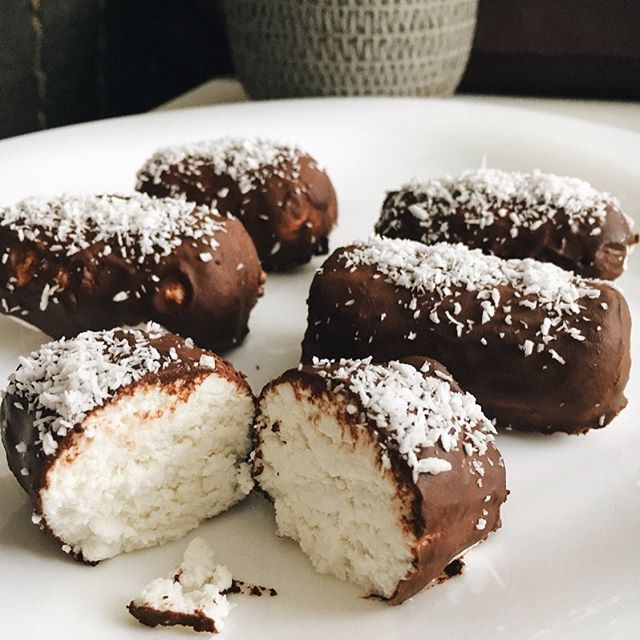

Самые вкусные сырки в мире №1
Если вы еще не знакомы с этим видом глазированных творожных сырков, то мне вас искренне жаль! Как только вы прикоснетесь к прекрасному, ваша жизнь не будет прежней и вы поймете о чем я говорю!
Это же карамельмый сырок! Понимаете, сейчас вы смотрите на самый вкусный сырок во вселенной?! Восхитительно...
Взгляните на эту структуру! это самая красивая структура в вашей жизни! А его вкус и аромат... У меня уже потекли слюнки, так что давайте уже поскорее перейдем ко второму сырку!
Тоже очень вкусные сырки, но все же №2
Этот вид сырков тоже может вас удивить, его консистенция так же уникальна, как и у сырка №1: Идеальные пропорции жира и сахара, идеальное сочетание творога и молочно-шоколадной глазури... Ммм... Райское наслаждение!
Густая, тягучая начинка из вареной сгущёнки покорит даже самое чёрствое сердце!
Если этот сырок так хорош, то почему он не делит первое место с карамельным сырком?
Вопрос действительно интересный...
Наверное, дело не в самом сырке №2, а в неповторимом и неподражаемом первом сырке. Понимаете, сырок №1 - это как рай, а сырок №2 - это ключи от рая!
Если у вас мало денег, но очень хочется чего-то прекрасного
Представляю вашему вниманию такой вот вид сырков. Они тоже вкусные. Правда вкусные.
Но не на столько...
Тут как раз можно заметить, в чем же все таки разница между оригинальным, утопическим, неземным топом глазированых творожных сырков и его более бюджетной репликой.
Знаете, такие сырки можно покупать, например, своим друзьям, своей девушке или парню. Не дорого (самое главное, себе то мы взяли тот, что надо)), мило, вкусно, приятно. Ну вы понимаете, такой вид сырков тоже жизненно необходим.